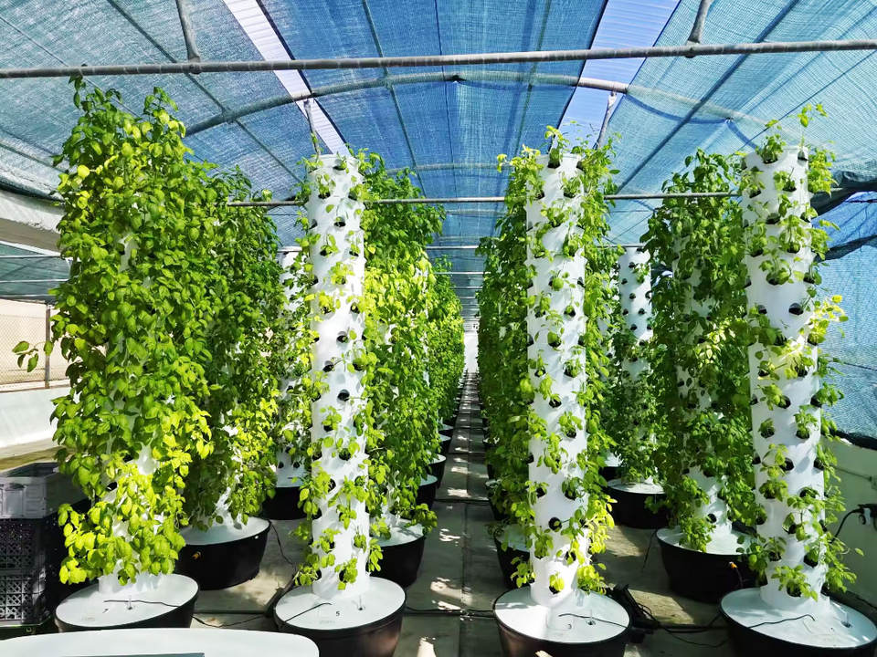

About Us
The Garden Suites [bed & breakfast] is an overnight lodging service influenced around nature and sustanance gardening.
The goal behind our sustanance gardening is to promote the idea of self care and therapeutic gardening, with our goal to provide guests with learning of it and leaving relaxed.
What is hydroponics?
hydroponics is a form of gardening in which plants or crops are maintained without soil but rather nutrient water. This is beneficial for mutiple reasons, interstinngly enough it actually saves water becasue the system recycles the water multiple times over, supplying the entire planter with a fraction of the water used for in ground gardening. We pride ourselves in these systems, and with staying with us, we hope to share our pride and practices with you.
Our Services
Our room accomadations price overnight lodging and locally sourced breakfast complimentarily included by staying with us. Meal plans and dining will be charged seperately, and
We have a state of the art hydroponics gardening system on-site to provide our meal services to our guests. Upon request, tours are available for educating guests on our self care and gardening philosophy.
We offer two room types; the Home Garden Suite, and the Exotic Planter Suite.
Our room designs implement nature alonside our own realm, implementing hand designed floral and green designs into the decor.
House keeping services stop by from 9:00AM-10:30AM

A photo of our on site greenhouse, housing our pristinely kept hydroponics system